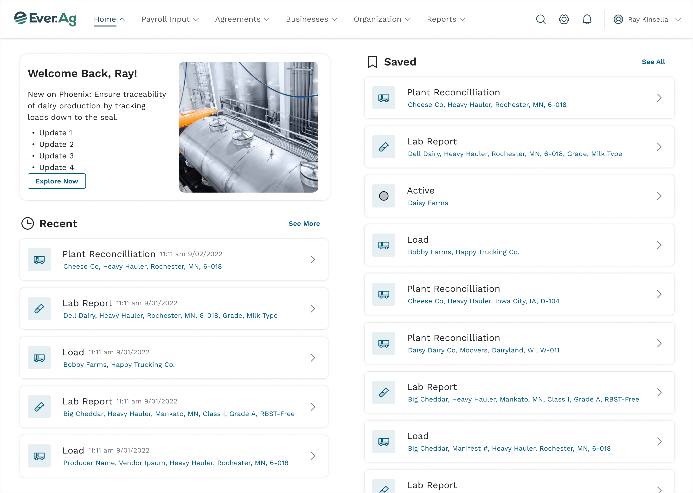
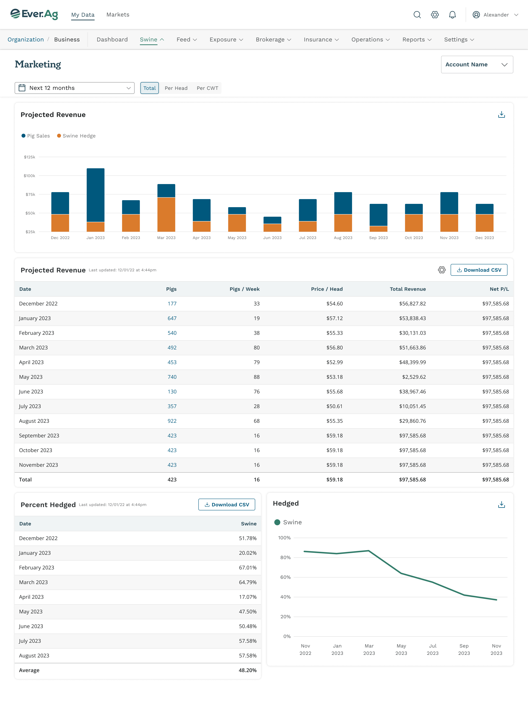
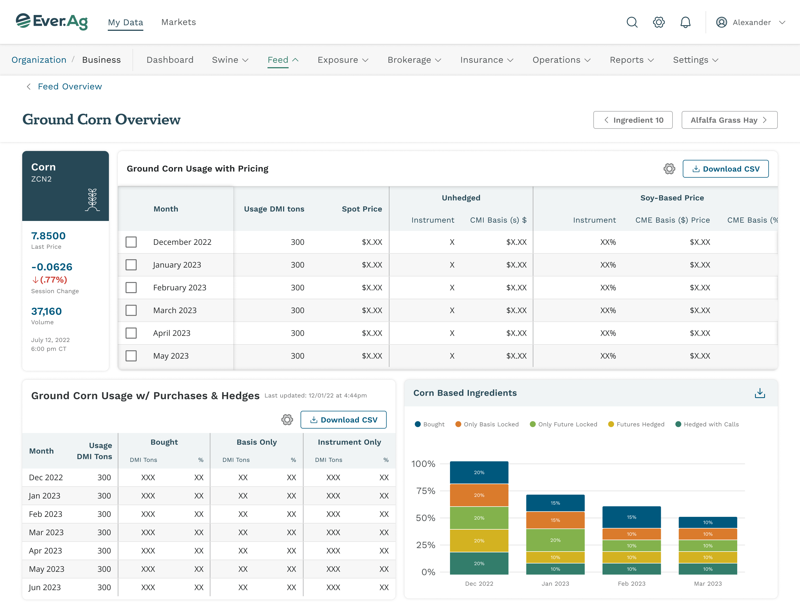
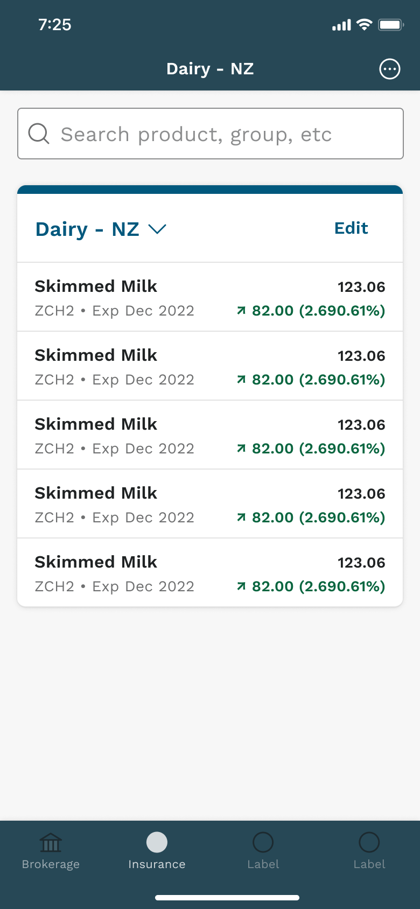
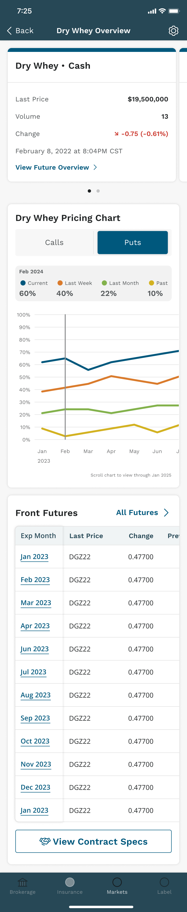

A product suite, acquired one company at a time.
Ever.Ag makes software for the agricultural supply chain, from dairy production and hauling through livestock markets and futures trading to the back-office systems that pay everyone. Much of that suite arrived through acquisition, and it looked like it. More than ten products each carried the interface of the company it used to be.
In 2022 Ever.Ag brought in Foundry to make it one product family. I pitched the work, led design across the multi-year engagement that followed, and from September 2022 owned the design system hands-on. The system had to come first. There was nothing to redesign the products with until it existed.
The design system came first.
We started with an interface audit across the portfolio and distilled it into a style guide for color and typography. From there we built a full Figma design system for web and mobile, with components and usage guidance, plus templates for the tables and dashboards these products live on. It was one source of truth published two ways, as Figma libraries for designers and as a style guide for engineers and product teams. The guide lives at design.ever.ag, a domain I set up and administered.
A system only earns its keep when other people build with it, so this one shipped with its process. Contribution guidelines and a changelog governed changes. A weekly design sync kept designers from Foundry, Ever.Ag, and a partner agency, spread across three countries, working as one team on one set of parts. I also proved out the handoff itself, moving the system into Ever.Ag's own Figma organization with its linked components intact. Then I documented what was still missing so their design team could carry it on.

Following the milk.
Dairy is a relay race: a farm fills the tank, a hauler moves it, a plant receives it, and a co-op pays everyone for their leg. Ever.Ag has a product at each handoff, and the system let us redesign them as one connected experience rather than four separate apps.
Producers got a portal that puts their production and quality numbers against the market price of milk. Haulers got routes drawn on a map with every pickup in sequence, and a field app that walks each stop in the order it physically happens, from producer and weight through seals and samples. And the co-op back office got load search with saved presets, and tables that turn thousands of deliveries into payroll.


Then the market side.
The products we shaped most were the financial ones, risk management and commodity tools for producers who hedge feed costs and livestock sales. On the sales side, projected revenue sits beside hedge coverage month by month. On the feed side, an ingredient's usage and purchases sit beside its live futures price. Both are built from the same chart and table components as everything else in the suite.
The same foundation carried to mobile. We took a brokerage product built for big, data-dense trading screens and rethought its markets views for the phone. The new chart and table patterns fed back into the system for the next product to use.



